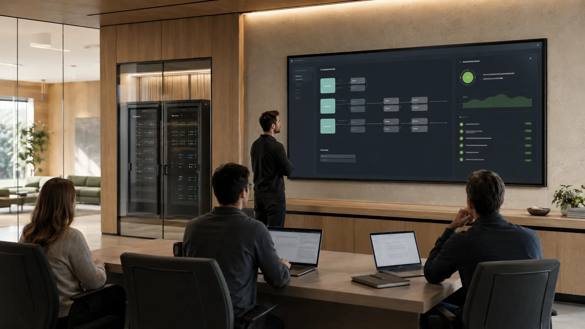

Thursday, September 10: Introduce the course goals, one-month project, and class logistics; learn GitHub and Codex fundamentals from the beginning; then complete a guided 30-minute Observe → Plan → Act → Verify → Reflect challenge. No prior GitHub or Codex experience is assumed.
Tuesday, September 15: Build a durable repository context packet, compare weak and context-rich prompts, and measure how verified instructions improve Codex plans and code changes.
Thursday, September 17: Turn a vague request into an auditable GitHub issue, branch, failing test, minimal implementation, and evidence-rich pull request.
Tuesday, September 22: Design and implement a narrow external-API tool with explicit schemas, safe configuration, normalized errors, mocked tests, and clear retry behavior.
Thursday, September 24: Turn messy events into a staged, schema-validated data pipeline with structured logs, deterministic failure handling, and reconciled run summaries.
Tuesday, September 29: Implement a minimal agent control loop with explicit state, two constrained tools, structured traces, step budgets, and predictable termination.
Thursday, October 1: Create and evaluate a focused Codex Skill that packages a repeatable repository workflow with clear triggers, boundaries, verification, and supporting resources.
Tuesday, October 6: Give an agent durable memory using SQLite, migrations, provenance, conflict handling, and evidence-linked answers that can be refreshed as facts change.
Thursday, October 8: Build a small retrieval pipeline, compare chunking and ranking strategies, require cited answers, and evaluate correctness and abstention on a frozen question set.
Thursday, October 15: Delegate bounded work to specialist agents, exchange evidence-rich handoffs, resolve an intentional conflict, and compare orchestration with a single-agent baseline.
Tuesday, October 20: Threat-model an agent, enforce tool permissions and confirmations in code, redact traces, and test defenses against prompt injection and unsafe actions.
Thursday, October 22: Create a provider-neutral model interface with explicit fallback policy, retry and usage budgets, telemetry, and parity tests across providers or test doubles.

Tuesday, October 27: Wrap an agent in a thin API or user interface with visible job states, safe configuration, health checks, reproducible startup, and an end-to-end test.
Thursday, October 29: Launch the one-month team project with a validated user problem, bounded agent authority, architecture and risk records, a four-week backlog, and one working end-to-end slice.